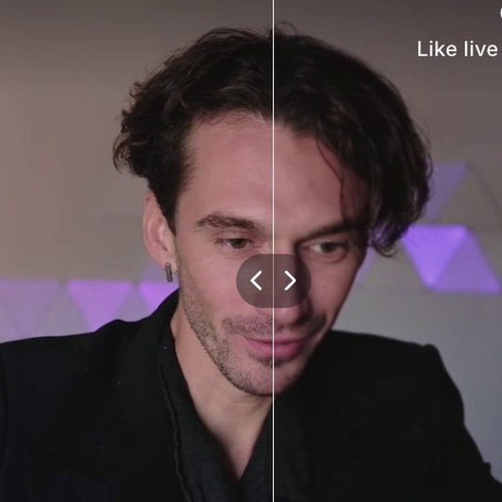

AIN3 / introредактируемая deck-структураAI Mindset
referenceintro-call.html · структура сохраненаAIN3 version
dataflowvault-first, public-safews-danik → aim-vault → deck
cohort mappublic aggregate layerupdated 2026-07-11
routingcommon core, different accentscurators after intro
intro protocolone circle, one processW0 task brief
kickoffStepan + Alexprocess brief → first artifact
program spineone process across three weeksDemo Day · 3 Aug
cadence15 live slots + Q&A + Demo Daycalendar from weekly plan
спикеры и гости
люди закрывают разные слои AI-native организации

Степан Гершуни
cyber.Fund · strategy · AI-native org

Александр Поваляев
AI Mindset · lab rhythm · artifacts

Денис Смирнов
AI-native systems · practice · agents
DT
Дима Твердохлебов
Omnius.team · ex-МТС / AI VK

Даниил Кравцов
Improvado · knowledge graph · data layer

Сева Устинов
Plurio AI · shared workspace · product agents
AN
Артём Новосёлов
Foresyn · ex-Stripe · product systems

Серёжа Рис
tools · loops · workflows · live coding
YV
Юра Веденин
UXPressia · team transformation · enterprise UX
speaker wallphotos from deck assets when availableLMS/vault checked
кто с кем работает
маршруты поддержки привязаны к типу процесса
personal / micro


setup route
Александр Васильев + AIM host layer. Личная среда, первый skill, ежедневный рабочий ритм.
founder / smb
KU SAVS
SAVS
SAVSbusiness route
Константин Урванцев, Станислав Федосеев, Сергей Ахметов, Виктор Соковнин. Процесс, продукт, команда, go-to-market.
enterprise
 AG
AGenterprise route
Юра Донто, Денис Смирнов, Станислав Федосеев, Антон Грабаров. Security, ownership, rollout.
context / agents

agent route
Источники истины, правила, eval, качество результата, границы автономии и первый agent route.
после интро можно быстро собрать mini-groups: по типу процесса, уровню компании и первому артефакту.
curator routesrouting after W0 circleoffice hours / mini-groups
LMSpublic page checked · participant access requiredTelegram auth
participant contractshort human languageDemo Day criteria
source mappublic-safe deckAIN3 intro protocol v4
deck kitdocumented in AIN3_INTRO_DECK_PIPELINE.mdsystem multigen